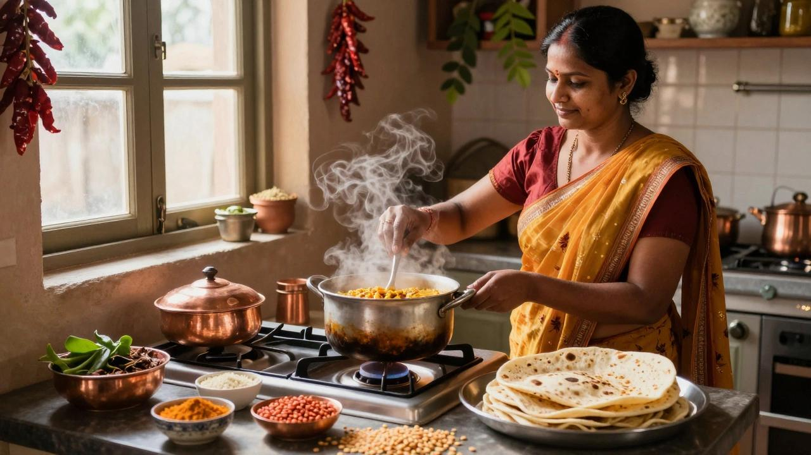
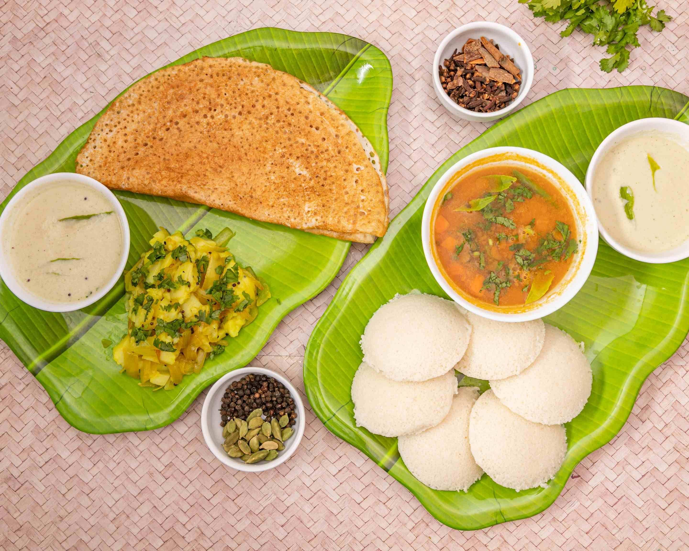
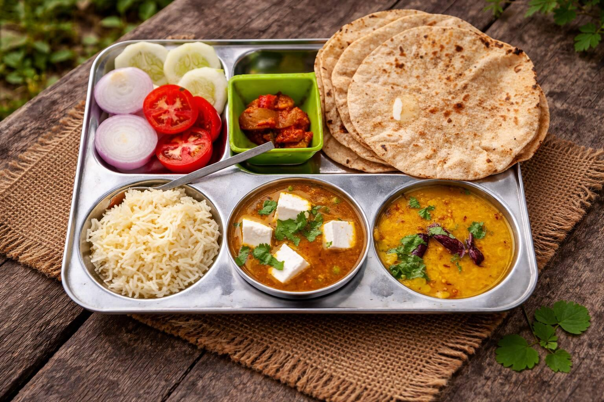
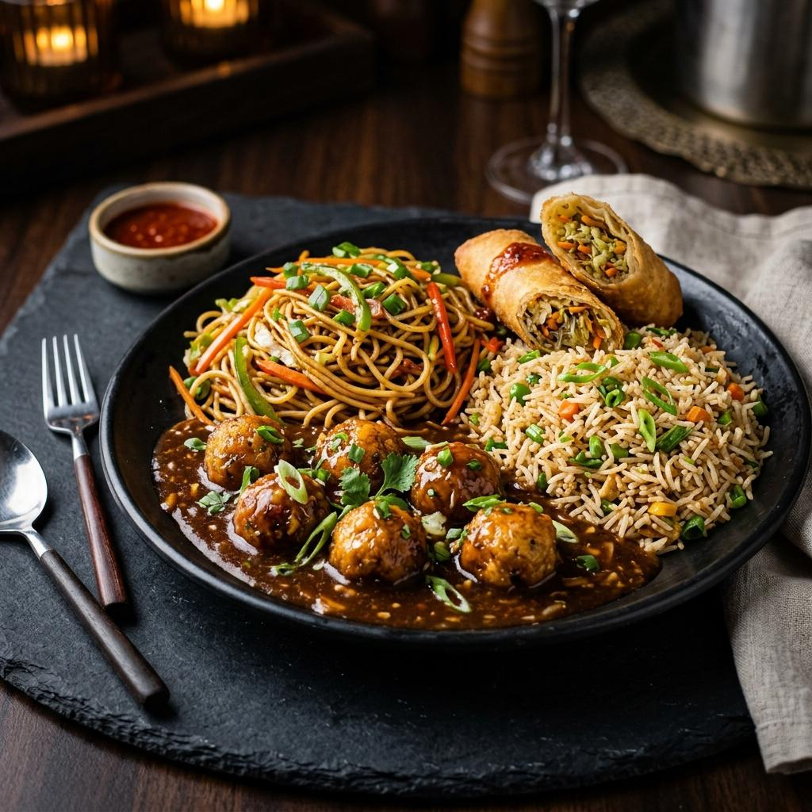
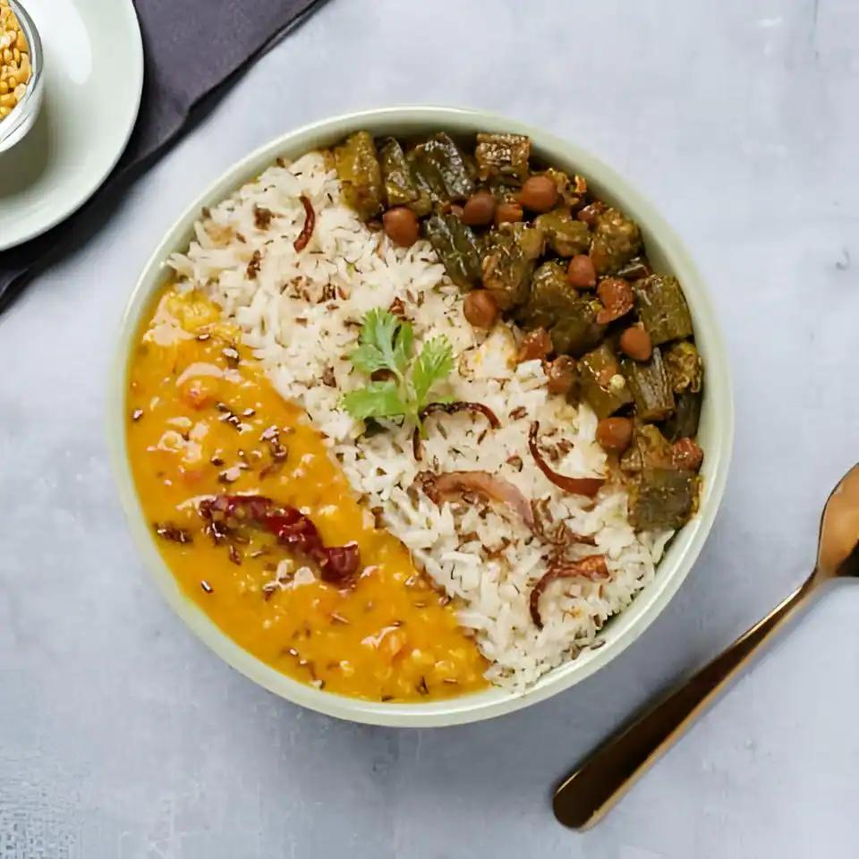
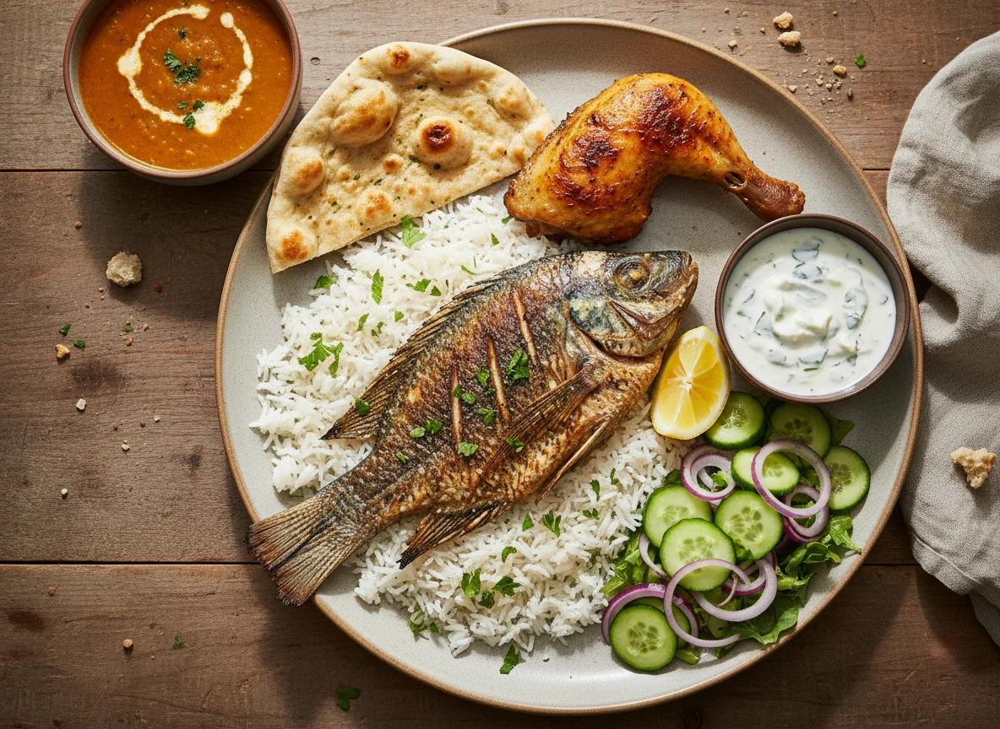

Verified
Verified
Kavitha's Kitchen
South Indian Specialist

Discover talented local home chefs, explore their specialities, and find the perfect homemade meals for your everyday cravings.
Search and filter home chefs by cuisine, meal type, location, rating, and price to discover meals that fit your taste and routine.
Explore trusted home chefs from your local community and discover fresh meals prepared with care, experience, and authentic homemade flavours.
Verified
South Indian Specialist
 Verified
Verified
North Indian Specialist
 Verified
Verified
Healthy Meal Specialist
 Verified
Verified
Indian Chinese Specialist
Discover more local chefs, cuisines and homemade meals made for your everyday routine.
Explore All Home ChefsFind home chefs who specialise in the flavours you love and discover homemade meals prepared just for you.

Traditional homemade flavours including rice meals, dosa, idli, sambar and regional favourites.
Explore Chefs
Comforting homemade curries, rotis, parathas, thalis and classic North Indian dishes.
Explore Chefs
Popular Indo-Chinese favourites prepared with homemade ingredients and familiar flavours.
Explore Chefs
Balanced homemade meals with lighter options, nutritious ingredients and mindful preparation.
Explore Chefs
Homemade chicken, fish and other non-vegetarian favourites prepared in comforting regional styles.
Explore Chefs
Fresh homemade breakfast favourites and snacks for lighter meals throughout the day.
Explore ChefsCan't decide? Explore all home chefs and discover something new.
Explore All Home ChefsExplore our growing community of home chefs and discover someone who matches your taste, routine, and meal preferences.
Verified
South Indian Specialist
Verified
North Indian Specialist
Verified
North Indian Specialist
Verified
Breakfast Specialist
 Verified
Verified
Healthy Meal Specialist
Indian Chinese Specialist
Non-Veg Specialist
South Indian Specialist
Try changing your filters or explore another cuisine.
Enjoy homemade meals prepared by trusted home chefs who care about freshness, quality, and the taste of real home cooking.
Discover home chefs with detailed profiles, ratings, reviews, and verified information before placing your order.
Meals are prepared in home kitchens using fresh ingredients and familiar recipes for an authentic homemade experience.
Explore different cuisines, meal styles, dietary preferences, and specialties to find a chef that matches your taste.
Compare ratings, customer reviews, pricing, delivery details, and chef information before choosing your homemade meal.
Love cooking for others? Share your homemade food with customers in your area and become part of the TiffinMate home chef community.
Turn your cooking skills into an additional source of income from your own kitchen.
Manage your availability and accept orders according to your preferred schedule.
Build your chef profile and connect with customers looking for homemade meals nearby.
Showcase your specialities, menu, customer reviews, and homemade food experience.